Potensi Desa
Potensi Desa Bontosunggu berdasarkan masing-masing dusun
↔ Geser ke samping untuk melihat potensi lainnya dalam setiap dusun
Dusun Gallang
2 potensiDusun Tamalate
2 potensiDusun Kampung Beru
2 potensi
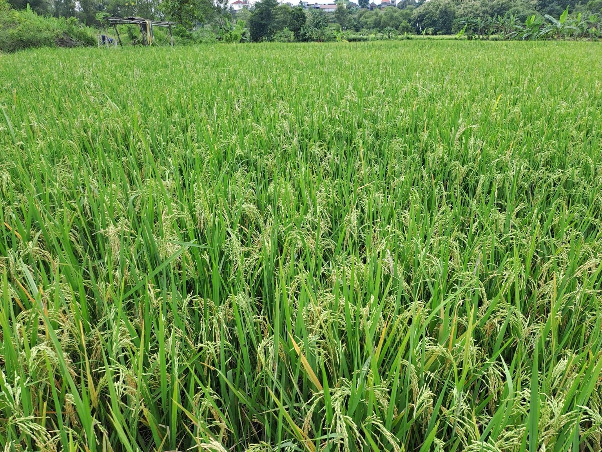
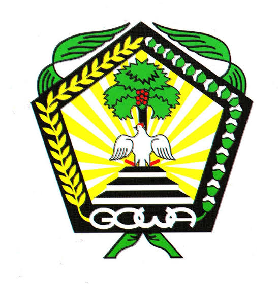
Desa BontosungguJelajahi potensi desa serta fasilitas umum Desa Bontosunggu melalui informasi lokasi dan peta digital.
Lima dusun dalam wilayah Desa Bontosunggu
Website ini menyajikan informasi awal mengenai potensi dan fasilitas yang telah didata dalam kegiatan pemetaan digital Desa Bontosunggu.
Potensi Desa Bontosunggu berdasarkan masing-masing dusun
↔ Geser ke samping untuk melihat potensi lainnya dalam setiap dusun

Fasilitas yang telah didata beserta titik koordinatnya
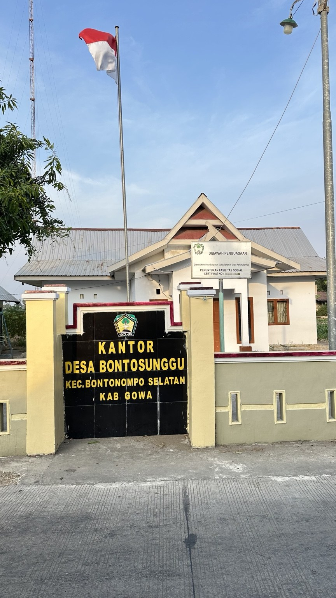
Pusat pelayanan pemerintahan Desa Bontosunggu.
📍 Buka di Google Maps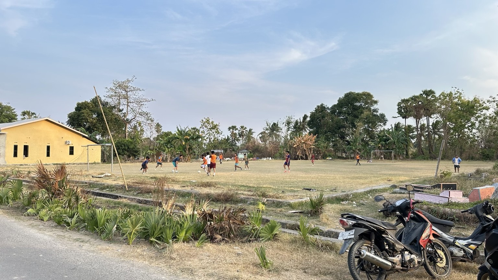
Fasilitas olahraga dan ruang aktivitas masyarakat.
📍 Buka di Google Maps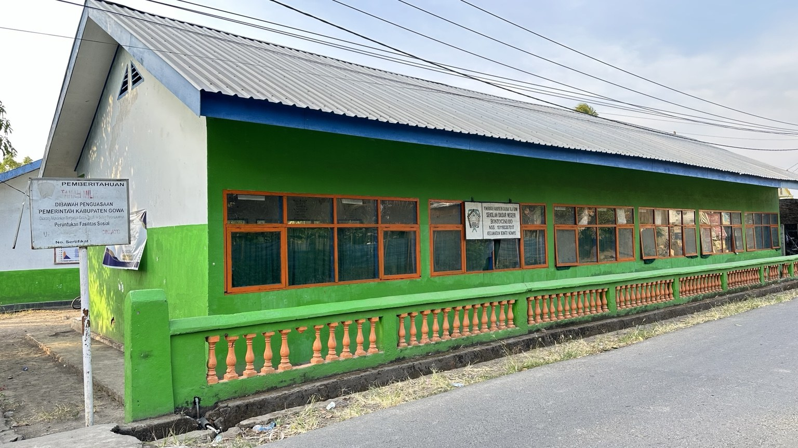
Fasilitas pendidikan di wilayah Bonto Ciniayo.
📍 Buka di Google Maps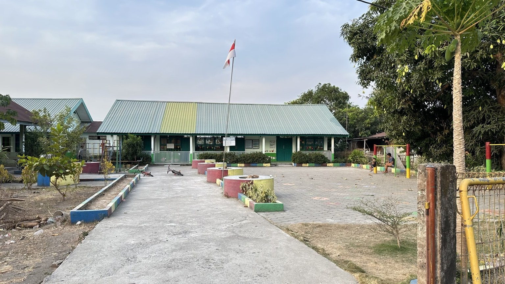
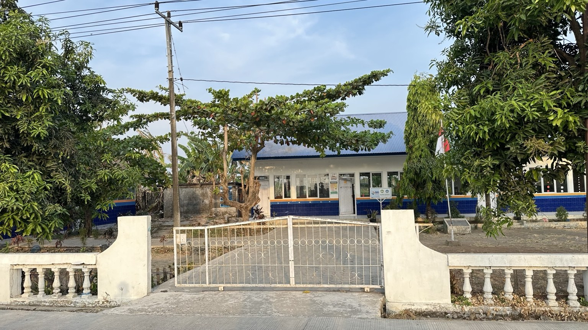
Fasilitas pendidikan di wilayah Sorobaya.
📍 Buka di Google Maps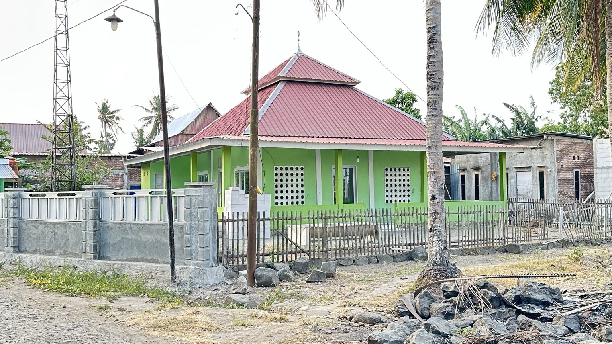
Fasilitas ibadah masyarakat di Kampung Beru.
📍 Buka di Google Maps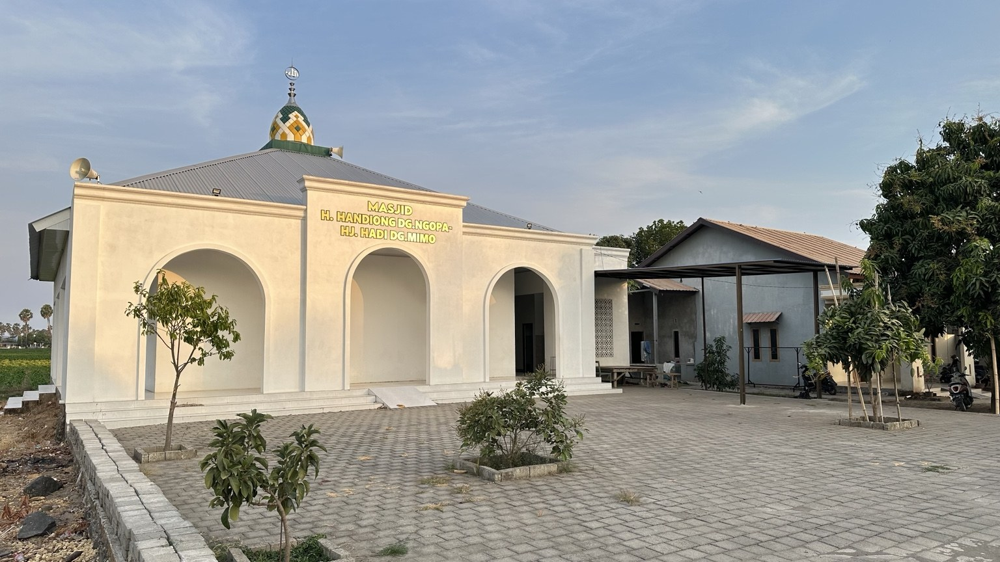
Fasilitas ibadah masyarakat di Kampung Beru.
📍 Buka di Google Maps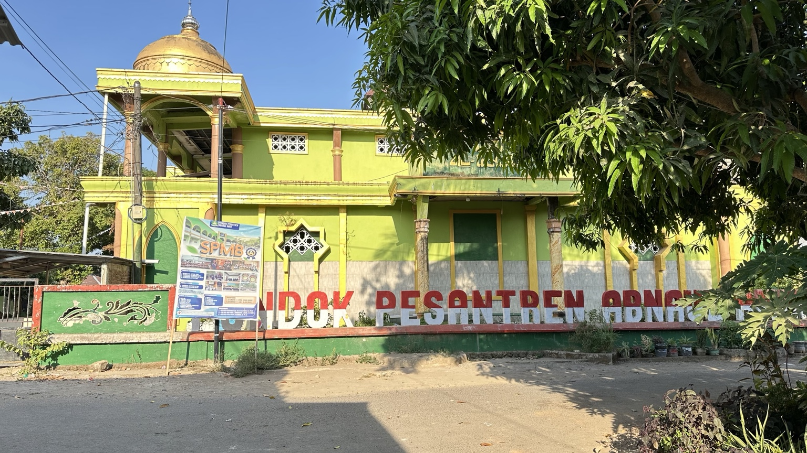
Fasilitas pendidikan keagamaan di wilayah Bonto Ciniayo.
📍 Buka di Google Maps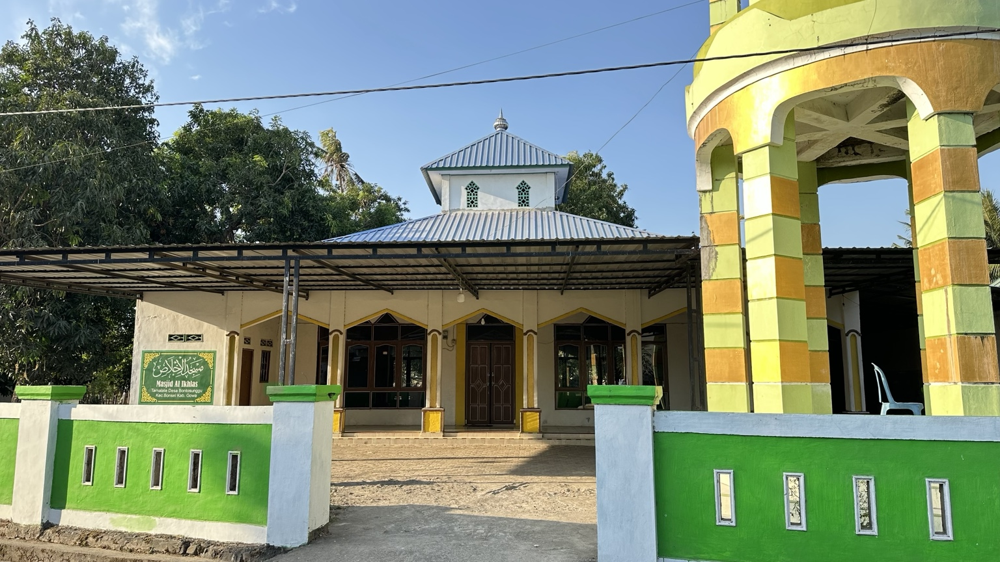
Fasilitas ibadah masyarakat di Tamalate.
📍 Buka di Google Maps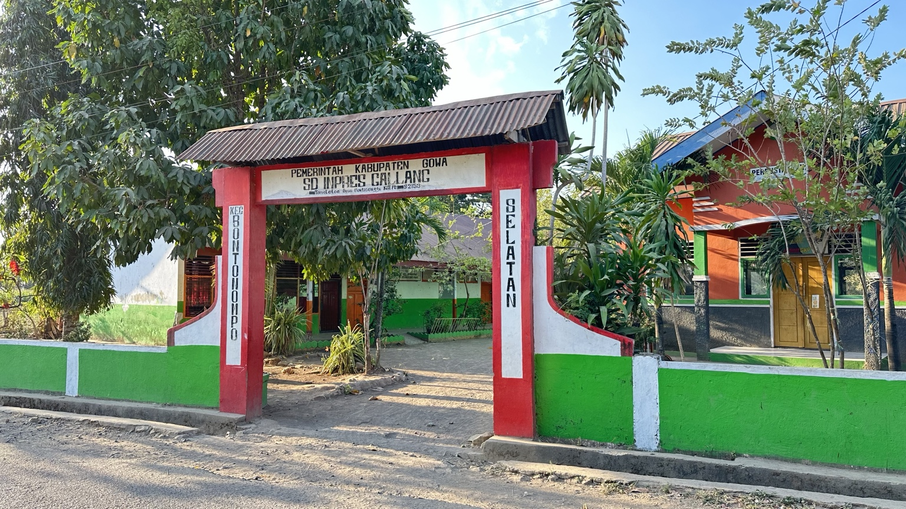
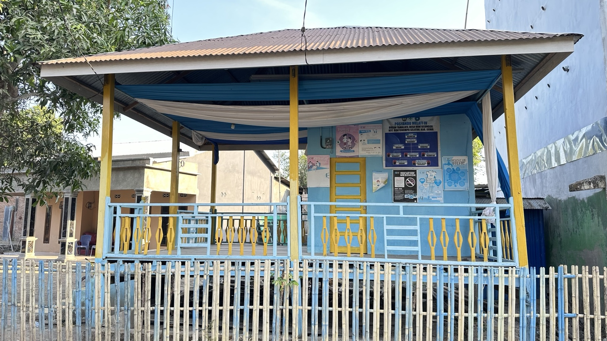
Fasilitas pelayanan kesehatan masyarakat di Tamalate.
📍 Buka di Google Maps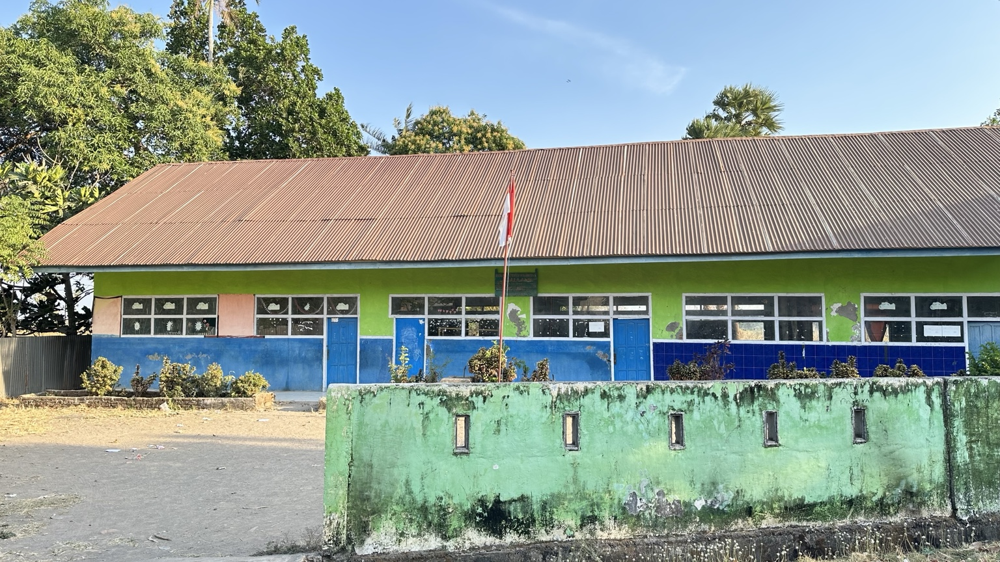
Fasilitas pendidikan di wilayah Gallang.
📍 Buka di Google Maps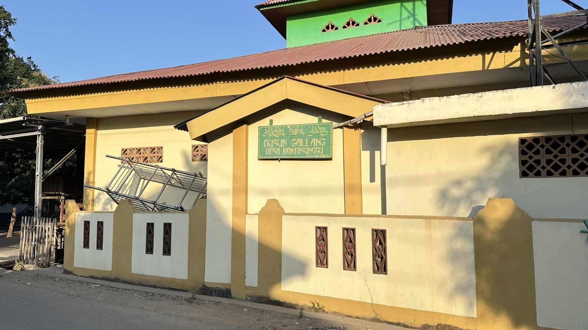
Fasilitas ibadah masyarakat di Gallang.
📍 Buka di Google Maps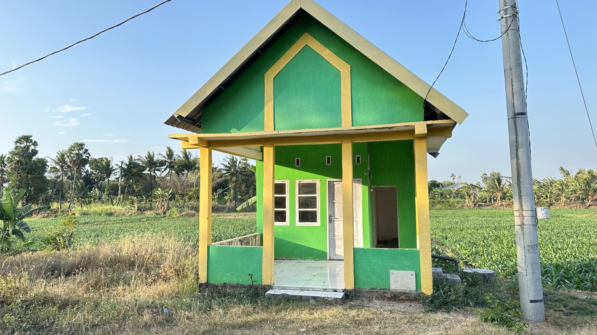
Fasilitas pelayanan kesehatan masyarakat di Sorobaya.
📍 Buka di Google Maps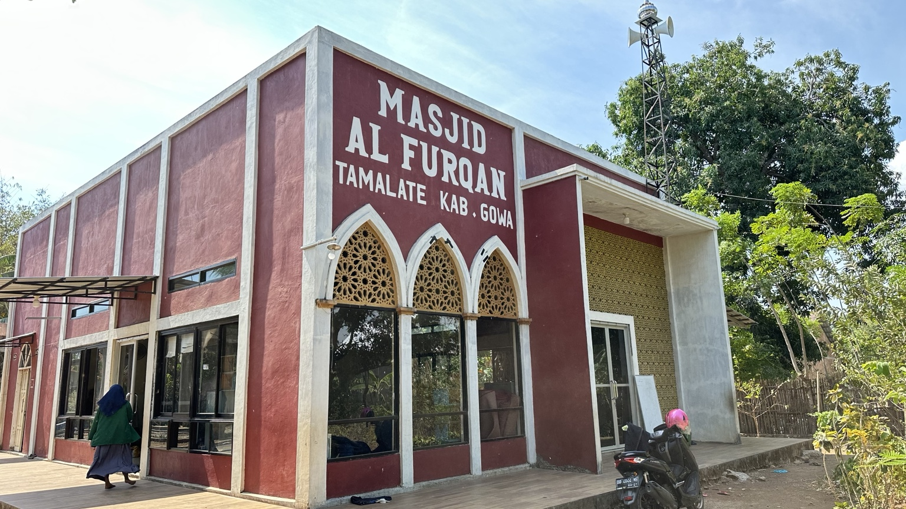
Fasilitas ibadah masyarakat di Tamalate.
📍 Buka di Google MapsPersebaran fasilitas yang telah didata berdasarkan titik koordinat.